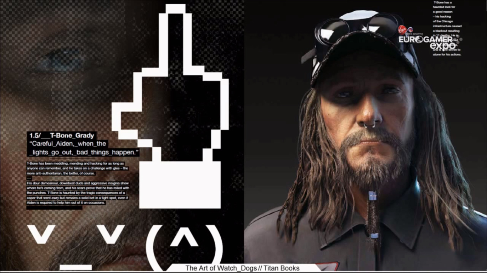
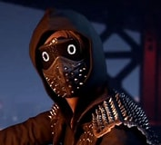
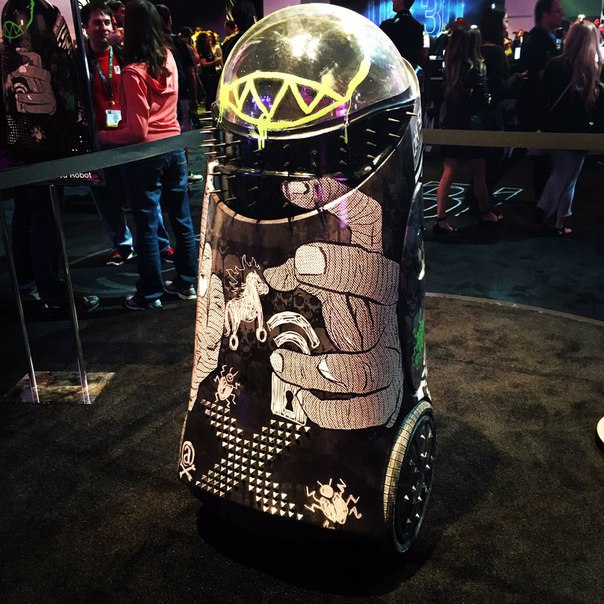
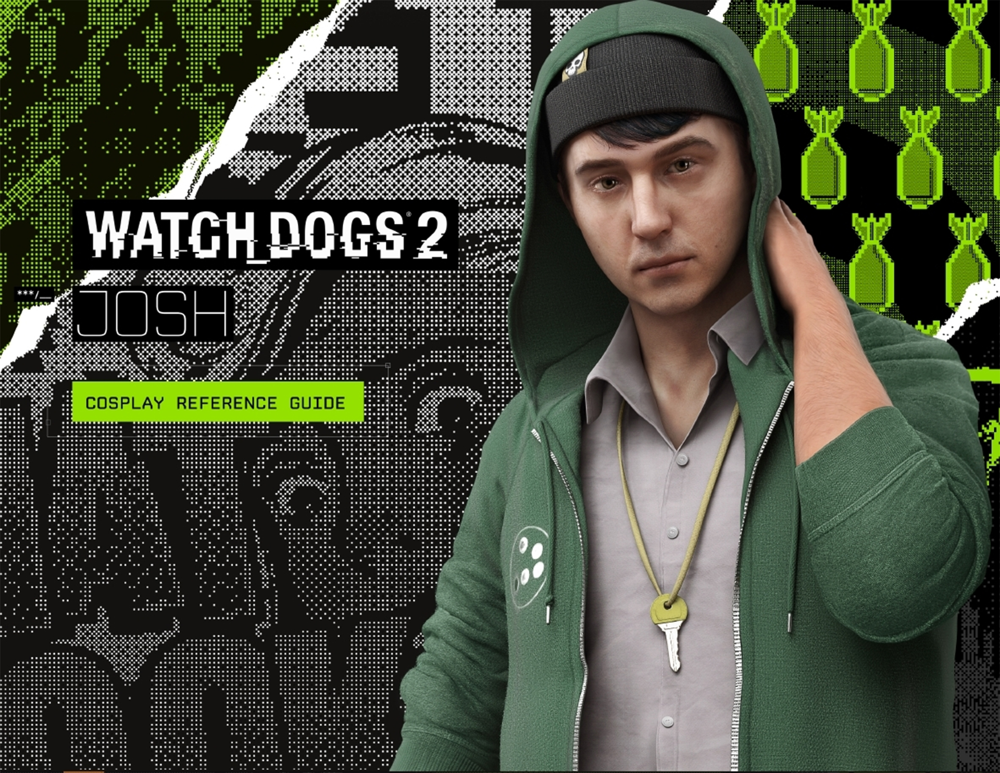

Watch Dogs 2 (стилизованное написание WATCH_DOGS 2; с англ. — «Сторожевые Псы 2») — мультиплатформенная компьютерная игра в жанре приключенческого боевика с открытым миром от французской компании Ubisoft, вышедшая на платформах PlayStation 4 и Xbox One 15 ноября 2016 года. На PC игра вышла 29 ноября 2016 года. Сиквел игры 2014 года Watch Dogs, продолжающий сюжетную идею предшественника — взлом и хакерская деятельность в большом открытом для исследования игровом мире.
Ubisoft Entertainment (ранее Ubi Soft Entertainment) — французская компания, специализирующаяся на разработке и издании компьютерных игр, главный офис которой располагается в Монтрёй, Франция.
Компания включает в себя студии в более чем в 20 странах, среди них Россия, США, Канада, Испания, Китай, Германия, Болгария, Украина, Румыния и Италия. Ubisoft является одним из крупнейших игровых издателей в Европе. По состоянию на сентябрь 2020 года Ubisoft является девятой по величине публичной компанией производителем компьютерных игр в Мире с точки зрения доходов и рыночной капитализации после Konami, Electronic Arts, Namco Bandai, Activision Blizzard, Sega, Nintendo, Microsoft, Sony и первой в Европе.
маркус
ти боун
ренч
ренч младший робот кампаньен dedseca
джошь